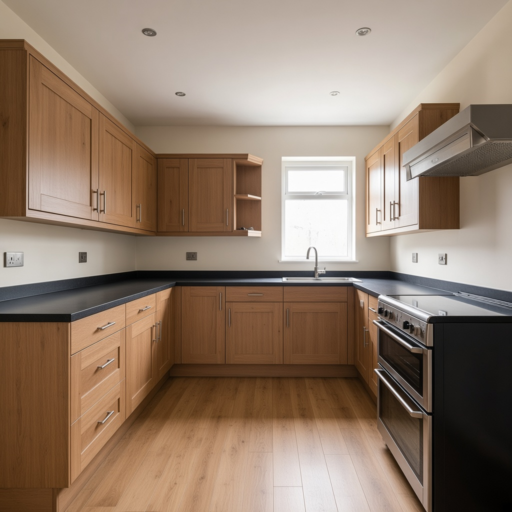
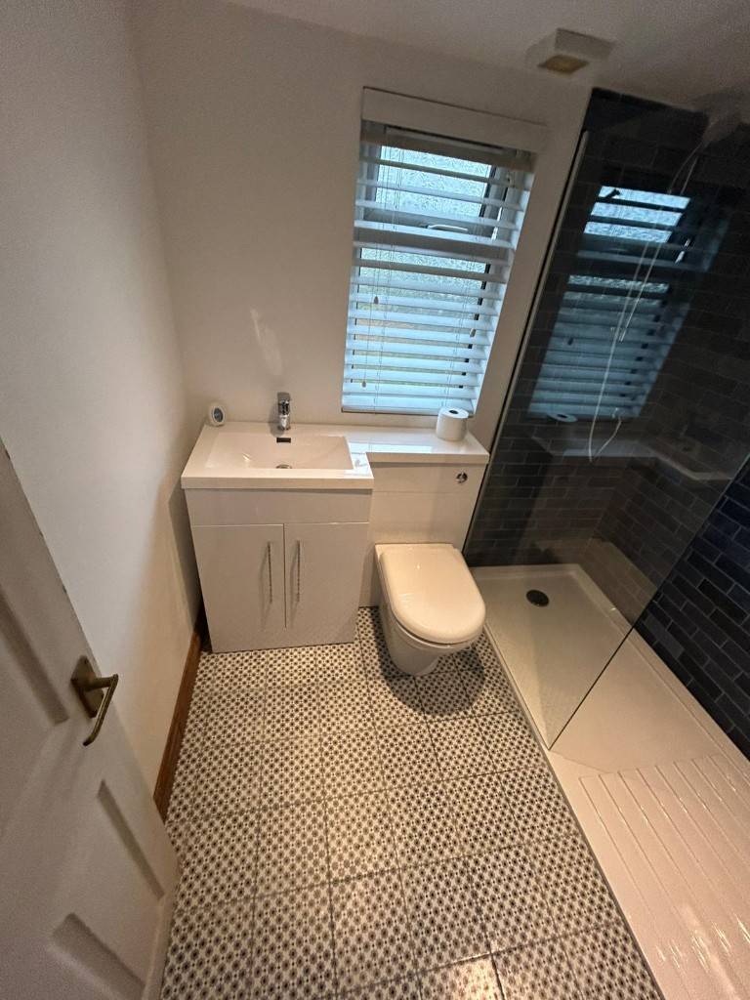
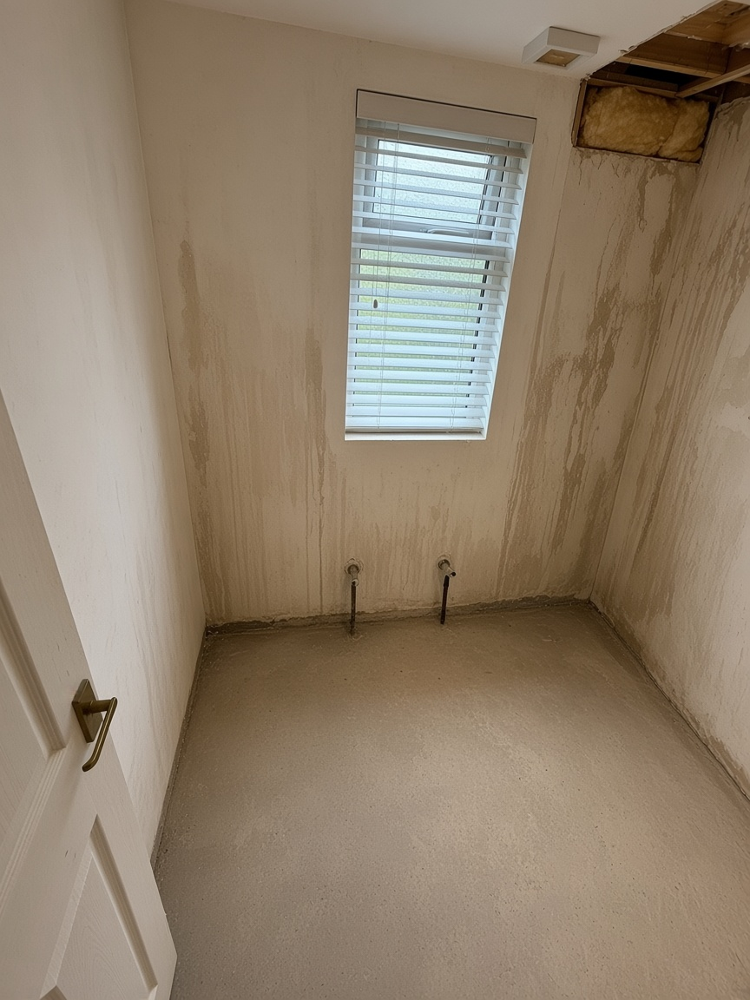
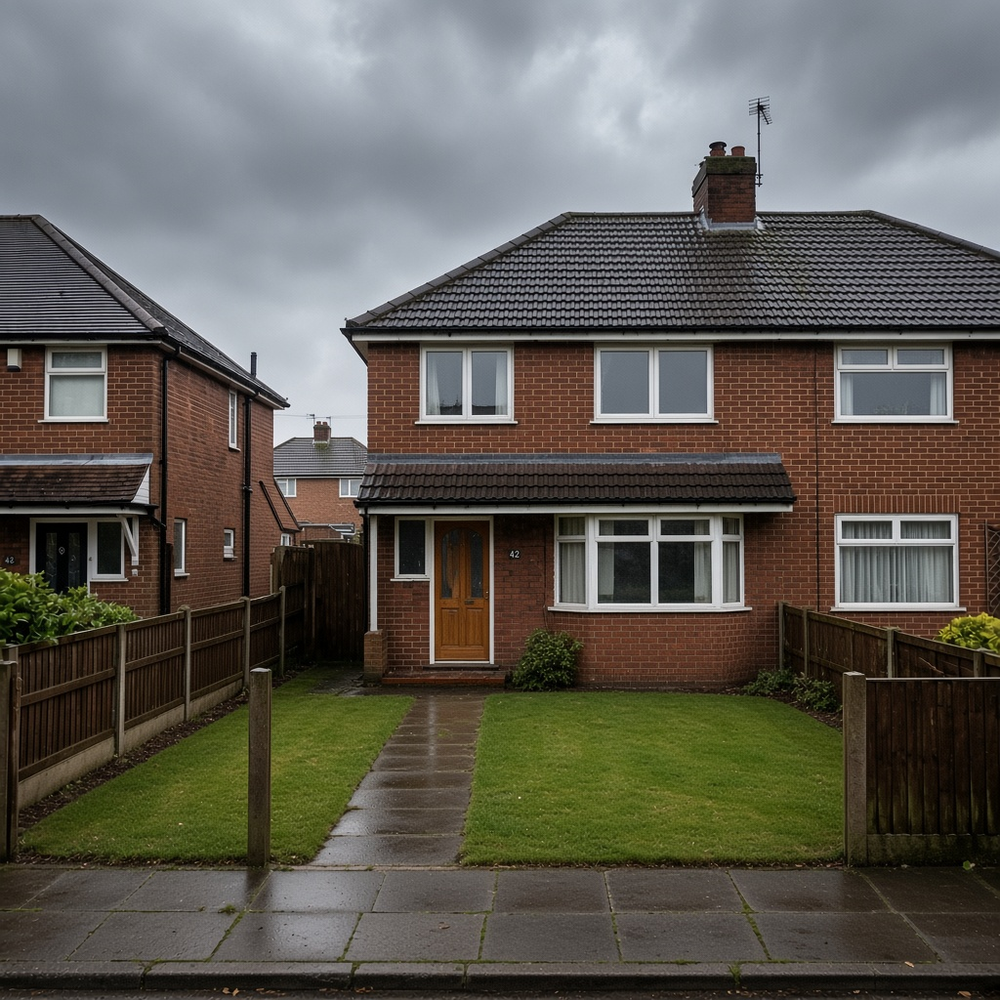

Fire DamageFire Damage Recovery
Emergency response and complete reinstatement of an Addlestone family home after fire and smoke damage.
View Case Study →Escape of water from the loft, a full bathroom strip-out, drying, and reinstatement of the suite, tiles and decoration.
An escape of water from the loft affected the bathroom at this Watford home. The suite could not stay in place, and neither could the wall tiles or the floor tiles. A section of the ceiling also had to come out before the room could be dried and put back.
The job needed a full bathroom strip-out, a drying programme, and a clear route back to a finished room.
The bathroom was fully stripped out. The suite was removed, all wall and floor tiles were taken off, and a section of the ceiling was removed so the damaged area could dry.
A drying programme was carried out with a third-party drying contractor. Capital Services then completed the reinstatement: the ceiling was re-boarded, the floors and walls were prepared and retiled, a new bathroom suite was installed, and the room was redecorated.
Drag the slider to compare the stripped bathroom with the finished reinstatement.


Before AfterEvery phase managed, documented, and delivered on schedule.
Our emergency response team is available around the clock — from make-safe to full reinstatement.

Fire DamageEmergency response and complete reinstatement of an Addlestone family home after fire and smoke damage.
View Case Study →
StormStructural roof repairs and reinstatement following severe weather damage.
View Case Study → Major Loss
Major Loss
Coordinated restoration of a substantial property following catastrophic impact damage.
View Case Study →